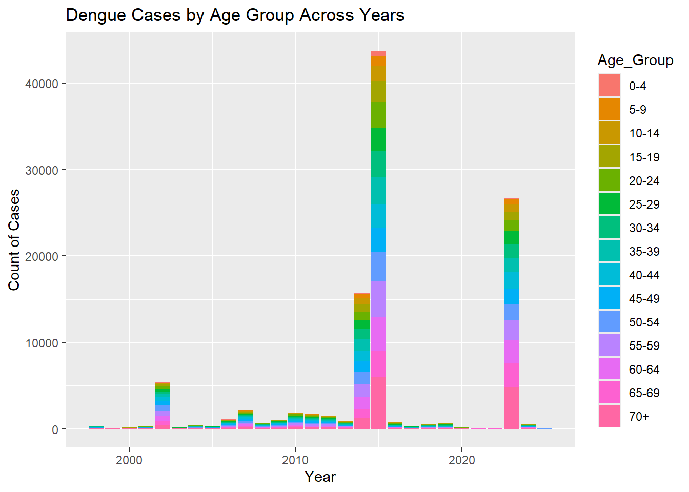

pacman::p_load(tidyverse,plotly)Data Preparation
1 Getting Started
The following R packages will be required:
2 Importing Data
The code chunk below uses read_csv() of readr to import the dengue_daily dataset into R environment.
dengue_daily <- read_csv("data/Dengue_Daily.csv")summary(dengue_daily) 發病日 個案研判日 通報日
Min. :1998-01-02 Min. :2004-05-16 Min. :1998-01-07
1st Qu.:2014-10-29 1st Qu.:2014-11-28 1st Qu.:2014-10-31
Median :2015-09-29 Median :2015-10-10 Median :2015-10-01
Mean :2016-04-13 Mean :2017-02-27 Mean :2016-04-16
3rd Qu.:2023-07-10 3rd Qu.:2023-08-18 3rd Qu.:2023-07-13
Max. :2025-03-16 Max. :2025-03-16 Max. :2025-03-16
NA's :6279
性別 年齡層 居住縣市 居住鄉鎮
Length:107312 Length:107312 Length:107312 Length:107312
Class :character Class :character Class :character Class :character
Mode :character Mode :character Mode :character Mode :character
居住村里 最小統計區 最小統計區中心點X 最小統計區中心點Y
Length:107312 Length:107312 Min. :118.3 Min. :21.93
Class :character Class :character 1st Qu.:120.2 1st Qu.:22.63
Mode :character Mode :character Median :120.3 Median :22.96
Mean :120.3 Mean :22.91
3rd Qu.:120.3 3rd Qu.:23.00
Max. :122.0 Max. :26.16
NA's :789 NA's :789
一級統計區 二級統計區 感染縣市 感染鄉鎮
Length:107312 Length:107312 Length:107312 Length:107312
Class :character Class :character Class :character Class :character
Mode :character Mode :character Mode :character Mode :character
感染村里 是否境外移入 感染國家 確定病例數
Length:107312 Length:107312 Length:107312 Min. :1
Class :character Class :character Class :character 1st Qu.:1
Mode :character Mode :character Mode :character Median :1
Mean :1
3rd Qu.:1
Max. :2
居住村里代碼 感染村里代碼 血清型 內政部居住縣市代碼
Length:107312 Length:107312 Length:107312 Min. : 63.0
Class :character Class :character Class :character 1st Qu.: 64.0
Mode :character Mode :character Mode :character Median : 67.0
Mean : 546.3
3rd Qu.: 67.0
Max. :10020.0
NA's :476
內政部居住鄉鎮代碼 內政部感染縣市代碼 內政部感染鄉鎮代碼
Min. : 900701 Min. : 63 Min. :1000202
1st Qu.:6400700 1st Qu.: 64 1st Qu.:6400700
Median :6401800 Median : 66 Median :6401600
Mean :6281126 Mean : 359 Mean :6384118
3rd Qu.:6703300 3rd Qu.: 67 3rd Qu.:6703300
Max. :6801200 Max. :10020 Max. :6801000
NA's :476 NA's :19108 NA's :19108 Translate column names to English
發病日: Onset Date
個案研判日: Case Classification Date
通報日: Reporting Date
性別: Gender
年齡層: Age Group
居住縣市: Residential County/City
居住鄉鎮: Residential Town/District
居住村里: Residential Village
最小統計區: Smallest Statistical Area
最小統計區中心點X: X-coord
最小統計區中心點Y: Y-coord
一級統計區: Primary Statistical Area
二級統計區: Secondary Statistical Area
感染縣市: Infection County/City
感染鄉鎮: Infection Town/District
感染村里: Infection Village
是否境外移入: Imported Case
感染國家: Infection Country
確定病例數: Confirmed Cases
居住村里代碼: Residential Village Code
感染村里代碼: Infection Village Code
血清型: Serotype
內政部居住縣市代碼: MOI Residential County Code
內政部居住鄉鎮代碼: MOI Residential Town Code
內政部感染縣市代碼: MOI Infection County Code
內政部感染鄉鎮代碼: MOI Infection Town Code
colnames(dengue_daily) <- c("Onset_Date", "Case_Classification_Date", "Reporting_Date", "Gender",
"Age_Group", "Residential_County_City", "Residential_Town_District",
"Residential_Village", "Smallest_Statistical_Area", "X_coord",
"Y_coord", "Primary_Statistical_Area", "Secondary_Statistical_Area",
"Infection_County_City", "Infection_Town_District", "Infection_Village",
"Imported_Case", "Infection_Country", "Confirmed_Cases",
"Residential_Village_Code", "Infection_Village_Code", "Serotype",
"MOI_Residential_County_Code", "MOI_Residential_Town_Code",
"MOI_Infection_County_Code", "MOI_Infection_Town_Code")2.1 Filter Past 10 Years’ Data
By “發病日” column
dengue_10yrs <- dengue_daily[dengue_daily$Onset_Date >= as.Date("2015-01-01") & dengue_daily$Onset_Date <= as.Date("2024-12-31"), ]summary(dengue_10yrs) Onset_Date Case_Classification_Date Reporting_Date
Min. :2015-01-01 Min. :2015-01-05 Min. :2015-01-05
1st Qu.:2015-09-26 1st Qu.:2015-09-29 1st Qu.:2015-09-28
Median :2015-11-18 Median :2015-11-21 Median :2015-11-20
Mean :2018-10-24 Mean :2018-10-27 Mean :2018-10-27
3rd Qu.:2023-09-17 3rd Qu.:2023-09-19 3rd Qu.:2023-09-18
Max. :2024-12-30 Max. :2025-01-15 Max. :2025-01-03
Gender Age_Group Residential_County_City
Length:73507 Length:73507 Length:73507
Class :character Class :character Class :character
Mode :character Mode :character Mode :character
Residential_Town_District Residential_Village Smallest_Statistical_Area
Length:73507 Length:73507 Length:73507
Class :character Class :character Class :character
Mode :character Mode :character Mode :character
X_coord Y_coord Primary_Statistical_Area
Min. :118.3 Min. :21.93 Length:73507
1st Qu.:120.2 1st Qu.:22.66 Class :character
Median :120.2 Median :22.98 Mode :character
Mean :120.3 Mean :22.96
3rd Qu.:120.3 3rd Qu.:23.01
Max. :122.0 Max. :26.16
NA's :376 NA's :376
Secondary_Statistical_Area Infection_County_City Infection_Town_District
Length:73507 Length:73507 Length:73507
Class :character Class :character Class :character
Mode :character Mode :character Mode :character
Infection_Village Imported_Case Infection_Country Confirmed_Cases
Length:73507 Length:73507 Length:73507 Min. :1
Class :character Class :character Class :character 1st Qu.:1
Mode :character Mode :character Mode :character Median :1
Mean :1
3rd Qu.:1
Max. :2
Residential_Village_Code Infection_Village_Code Serotype
Length:73507 Length:73507 Length:73507
Class :character Class :character Class :character
Mode :character Mode :character Mode :character
MOI_Residential_County_Code MOI_Residential_Town_Code
Min. : 63.0 Min. : 900701
1st Qu.: 64.0 1st Qu.:6400900
Median : 67.0 Median :6703100
Mean : 438.5 Mean :6385642
3rd Qu.: 67.0 3rd Qu.:6703400
Max. :10020.0 Max. :6801200
MOI_Infection_County_Code MOI_Infection_Town_Code
Min. : 63.0 Min. :1000207
1st Qu.: 64.0 1st Qu.:6400900
Median : 67.0 Median :6703100
Mean : 278.2 Mean :6478182
3rd Qu.: 67.0 3rd Qu.:6703400
Max. :10020.0 Max. :6801000
NA's :13623 NA's :13623 2.2 Check Missing Values
sum(is.na(dengue_10yrs))[1] 174686<TBC>
2.3 Data Cleaning
3. Data Preparation
Check Age_Group column
age_group_count <- dengue_10yrs %>%
count(Age_Group)
print(age_group_count)# A tibble: 19 × 2
Age_Group n
<chr> <int>
1 0 61
2 1 135
3 10-14 2743
4 15-19 3599
5 2 188
6 20-24 4568
7 25-29 4532
8 3 233
9 30-34 4951
10 35-39 5158
11 4 217
12 40-44 4849
13 45-49 4759
14 5-9 1668
15 50-54 5511
16 55-59 6526
17 60-64 6847
18 65-69 5857
19 70+ 11105Combine values 0,1,2,3,4, and sort the columns
dengue_10yrs <- dengue_10yrs %>%
mutate(Age_Group = ifelse(Age_Group %in% c("0", "1", "2", "3", "4"), "0-4", Age_Group),
Age_Group = factor(Age_Group, levels = c("0-4", "5-9",
sort(unique(Age_Group[
Age_Group != "0-4" & Age_Group != "5-9"]
)))))ggplot(data = dengue_10yrs, aes(x = Age_Group)) +
geom_bar(color = "black", fill = "grey") +
ggtitle("Distribution of Age Groups") +
xlab("Age Group") +
ylab("Count") +
theme_minimal() +
theme(axis.text.x = element_text(angle = 45, hjust = 1)) 
4. EDA
Aggregate by Onset_Month, count,
dengue_10yrs <- dengue_10yrs %>%
mutate(Date = ymd(Onset_Date)) # Convert Y/M/D to Date (use lubridate's ymd function)
# Extract the year from the Date column
dengue_10yrs <- dengue_10yrs %>%
mutate(Onset_Year = year(Date))
aggregated_data <- dengue_10yrs %>%
group_by(Age_Group, Residential_County_City, Onset_Year) %>%
summarize(Count = n(), .groups = "drop")
cases_by_age <- aggregated_data %>%
plot_ly(x = ~Age_Group,
y = ~Count,
color = ~Residential_County_City,
text = ~Residential_County_City,
hoverinfo = "text",
type = 'scatter',
mode = 'markers',
frame = ~Onset_Year) %>%
layout(
title = "Dengue Cases by Age Group",
xaxis = list(title = "Age Group"),
yaxis = list(title = "Count of Cases"),
showlegend = FALSE
)
cases_by_age